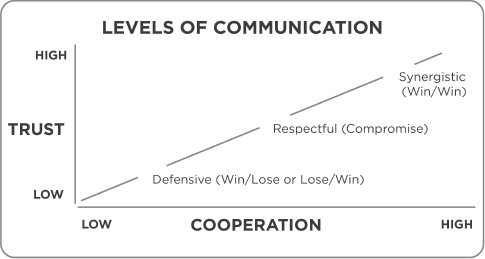
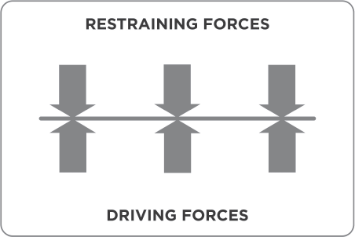
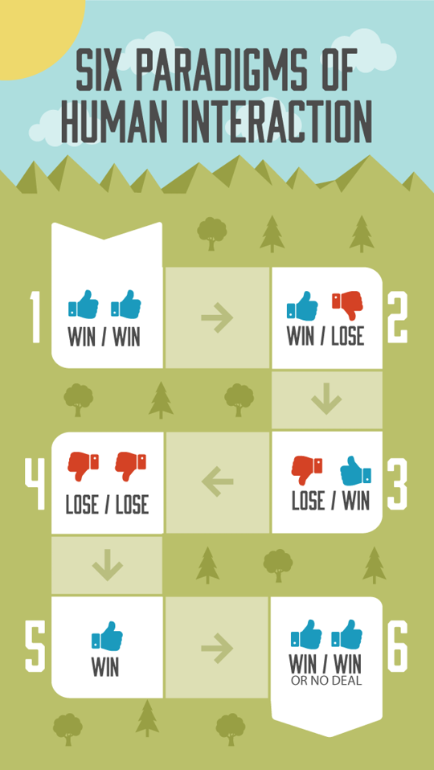
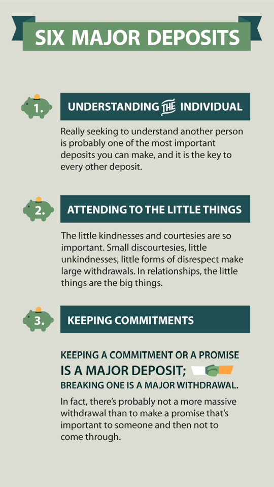
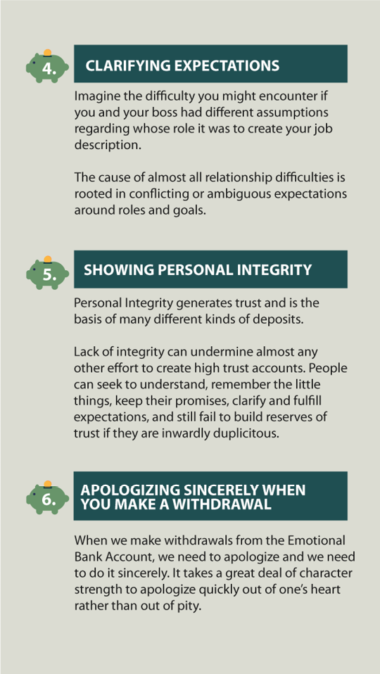

PRINCIPLES OF CREATIVE COOPERATION
I take as my guide the hope of a saint: in crucial things, unity—in important things, diversity—in all things, generosity.
INAUGURAL ADDRESS OF PRESIDENT GEORGE H. W. BUSH
When Sir Winston Churchill was called to head up the war effort for Great Britain, he remarked that all his life had prepared him for this hour. In a similar sense, the exercise of all of the other habits prepares us for the habit of synergy.
When properly understood, synergy is the highest activity in all life—the true test and manifestation of all of the other habits put together.
The highest forms of synergy focus the four unique human endowments, the motive of Win/Win, and the skills of empathic communication on the toughest challenges we face in life. What results is almost miraculous. We create new alternatives—something that wasn’t there before.
Synergy is the essence of principle-centered leadership. It is the essence of principle-centered parenting. It catalyzes, unifies, and unleashes the greatest powers within people. All the habits we have covered prepare us to create the miracle of synergy.
What is synergy? Simply defined, it means that the whole is greater than the sum of its parts. It means that the relationship which the parts have to each other is a part in and of itself. It is not only a part, but the most catalytic, the most empowering, the most unifying, and the most exciting part.
The creative process is also the most terrifying part because you don’t know exactly what’s going to happen or where it is going to lead. You don’t know what new dangers and challenges you’ll find. It takes an enormous amount of internal security to begin with the spirit of adventure, the spirit of discovery, the spirit of creativity. Without doubt, you have to leave the comfort zone of base camp and confront an entirely new and unknown wilderness. You become a trailblazer, a pathfinder. You open new possibilities, new territories, new continents, so that others can follow.
Synergy is everywhere in nature. If you plant two plants close together, the roots comingle and improve the quality of the soil so that both plants will grow better than if they were separated. If you put two pieces of wood together, they will hold much more than the total of the weight held by each separately. The whole is greater than the sum of its parts. One plus one equals three or more.
The challenge is to apply the principles of creative cooperation, which we learn from nature, in our social interactions. Family life provides many opportunities to observe synergy and to practice it.
The very way that a man and a woman bring a child into the world is synergistic. The essence of synergy is to value differences—to respect them, to build on strengths, to compensate for weaknesses.
We obviously value the physical differences between men and women, husbands and wives. But what about the social, mental, and emotional differences? Could these differences not also be sources of creating new, exciting forms of life—creating an environment that is truly fulfilling for each person, that nurtures the self-esteem and self-worth of each, that creates opportunities for each to mature into independence and then gradually into interdependence? Could synergy not create a new script for the next generation—one that is more geared to service and contribution, and is less protective, less adversarial, less selfish; one that is more open, more trusting, more giving, and is less defensive, protective, and political; one that is more loving, more caring, and is less possessive and judgmental?
SYNERGISTIC COMMUNICATION
When you communicate synergistically, you are simply opening your mind and heart and expressions to new possibilities, new alternatives, new options. It may seem as if you are casting aside Habit 2 (to begin with the end in mind); but, in fact, you’re doing the opposite—you’re fulfilling it. You’re not sure when you engage in synergistic communication how things will work out or what the end will look like, but you do have an inward sense of excitement and security and adventure, believing that it will be significantly better than it was before. And that is the end that you have in mind.
You begin with the belief that parties involved will gain more insight, and that the excitement of that mutual learning and insight will create a momentum toward more and more insights, learnings, and growth.
Many people have not really experienced even a moderate degree of synergy in their family life or in other interactions. They’ve been trained and scripted into defensive and protective communications or into believing that life or other people can’t be trusted. As a result, they are never really open to Habit 6 and to these principles.
This represents one of the great tragedies and wastes in life, because so much potential remains untapped—completely undeveloped and unused. Ineffective people live day after day with unused potential. They experience synergy only in small, peripheral ways in their lives.
They may have memories of some unusual creative experiences, perhaps in athletics, where they were involved in a real team spirit for a period of time. Or perhaps they were in an emergency situation where people cooperated to an unusually high degree and submerged ego and pride in an effort to save someone’s life or to produce a solution to a crisis.
To many, such events may seem unusual, almost out of character with life, even miraculous. But this is not so. These things can be produced regularly, consistently, almost daily in people’s lives. But it requires enormous personal security and openness and a spirit of adventure.
Most all creative endeavors are somewhat unpredictable. They often seem ambiguous, hit-or-miss, trial and error. And unless people have a high tolerance for ambiguity and get their security from integrity to principles and inner values they find it unnerving and unpleasant to be involved in highly creative enterprises. Their need for structure, certainty, and predictability is too high.
SYNERGY IN THE CLASSROOM
As a teacher, I have come to believe that many truly great classes teeter on the very edge of chaos. Synergy tests whether teachers and students are really open to the principle of the whole being greater than the sum of its parts.
There are times when neither the teacher nor the student knows for sure what’s going to happen. In the beginning, there’s a safe environment that enables people to be really open and to learn and to listen to each other’s ideas. Then comes brainstorming, where the spirit of evaluation is subordinated to the spirit of creativity, imagining, and intellectual networking. Then an absolutely unusual phenomenon begins to take place. The entire class is transformed with the excitement of a new thrust, a new idea, a new direction that’s hard to define, yet it’s almost palpable to the people involved.
Synergy is almost as if a group collectively agrees to subordinate old scripts and to write a new one.
***
I’ll never forget a university class I taught in leadership philosophy and style. We were about three weeks into a semester when, in the middle of a presentation, one person started to relate some very powerful personal experiences which were both emotional and insightful. A spirit of humility and reverence fell upon the class—reverence toward this individual and appreciation for his courage.
This spirit became fertile soil for a synergistic and creative endeavor. Others began to pick up on it, sharing some of their experiences and insights and even some of their self-doubts. The spirit of trust and safety prompted many to become extremely open. Rather than present what they prepared, they fed on each other’s insights and ideas and started to create a whole new scenario as to what that class could mean.
I was deeply involved in the process. In fact, I was almost mesmerized by it because it seemed so magical and creative. And I found myself gradually loosening up my commitment to the structure of the class and sensing entirely new possibilities. It wasn’t just a flight of fancy; there was a sense of maturity and stability and substance which transcended by far the old structure and plan.
We abandoned the old syllabus, the purchased textbooks and all the presentation plans, and we set up new purposes and projects and assignments. We became so excited about what was happening that in about three more weeks, we all sensed an overwhelming desire to share what was happening with others.
We decided to write a book containing our learnings and insights on the subject of our study—principles of leadership. Assignments were changed, new projects undertaken, new teams formed. People worked much harder than they ever would have in the original class structure, and for an entirely different set of reasons.
Out of this experience emerged a unique, extremely cohesive, and synergistic culture that did not end with the semester. For years, alumni meetings were held among members of that class. Even today, many years later, when we see each other, we talk about it and often attempt to describe what happened and why.
One of the interesting things to me was how little time had elapsed before there was sufficient trust to create such synergy. I think it was largely because the people were relatively mature. They were in the final semester of their senior year, and I think they wanted more than just another good classroom experience. They were hungry for something new and exciting, something that they could create that was truly meaningful. It was “an idea whose time had come” for them.
In addition, the chemistry was right. I felt that experiencing synergy was more powerful than talking about it, that producing something new was more meaningful than simply reading something old.
***
I’ve also experienced, as I believe most people have, times that were almost synergistic, times that hung on the edge of chaos and for some reason descended into it. Sadly, people who are burned by such experiences often begin their next new experience with that failure in mind. They defend themselves against it and cut themselves off from synergy.
It’s like administrators who set up new rules and regulations based on the abuses of a few people inside an organization, thus limiting the freedom and creative possibilities for many—or business partners who imagine the worst scenarios possible and write them up in legal language, killing the whole spirit of creativity, enterprise, and synergistic possibility.
As I think back on many consulting and executive education experiences, I can say that the highlights were almost always synergistic. There was usually an early moment that required considerable courage, perhaps in becoming extremely authentic, in confronting some inside truth about the individual or the organization or the family which really needed to be said, but took a combination of considerable courage and genuine love to say. Then others became more authentic, open, and honest, and the synergistic communication process began. It usually became more and more creative, and ended up in insights and plans that no one had anticipated initially.
As Carl Rogers taught, “That which is most personal is most general.” The more authentic you become, the more genuine in your expression, particularly regarding personal experiences and even self-doubts, the more people can relate to your expression and the safer it makes them feel to express themselves. That expression in turn feeds back on the other person’s spirit, and genuine creative empathy takes place, producing new insights and learnings and a sense of excitement and adventure that keeps the process going.
People then begin to interact with each other almost in half sentences, sometimes incoherent, but they get each other’s meanings very rapidly. Then whole new worlds of insights, new perspectives, new paradigms that ensure options, new alternatives are opened up and thought about. Though occasionally these new ideas are left up in the air, they usually come to some kind of closure that is practical and useful.
SYNERGY IN BUSINESS
I enjoyed one particularly meaningful synergistic experience as I worked with my associates to create the corporate mission statement for our business. Almost all members of the company went high up into the mountains where, surrounded by the magnificence of nature, we began with a first draft of what some of us considered to be an excellent mission statement.
At first the communication was respectful, careful and predictable. But as we began to talk about the various alternatives, possibilities and opportunities ahead, people became very open and authentic and simply started to think out loud. The mission statement agenda gave way to a collective free association, a spontaneous piggybacking of ideas. People were genuinely empathic as well as courageous, and we moved from mutual respect and understanding to creative synergistic communication.
Everyone could sense it. It was exciting. As it matured, we returned to the task of putting the evolved collective vision into words, each of which contains specific and committed-to meaning for each participant.
The resulting corporate mission statement reads:
Our mission is to empower people and organizations to significantly increase their performance capability in order to achieve worthwhile purposes through understanding and living principle-centered leadership.
The synergistic process that led to the creation of our mission statement engraved it in the hearts and minds of everyone there, and it has served us well as a frame of reference of what we are about, as well as what we are not about.
***
Another high level synergy experience took place when I accepted an invitation to serve as the resource and discussion catalyst at the annual planning meeting of a large insurance company. Several months ahead, I met with the committee responsible to prepare for and stage the two-day meeting which was to involve all the top executives. They informed me that the traditional pattern was to identify four or five major issues through questionnaires and interviews, and to have alternative proposals presented by the executives. Past meetings had been generally respectful exchanges, occasionally deteriorating into defensive Win/Lose ego battles. They were usually predictable, uncreative, and boring.
As I talked with the committee members about the power of synergy, they could sense its potential. With considerable trepidation, they agreed to change the pattern. They requested various executives to prepare anonymous “white papers” on each of the high priority issues, and then asked all the executives to immerse themselves in these papers ahead of time in order to understand the issues and the differing points of view. They were to come to the meeting prepared to listen rather than to present, prepared to create and synergize rather than to defend and protect.
We spent the first half-day in the meeting teaching the principles and practicing the skills of Habits 4, 5, and 6. The rest of the time was spent in creative synergy.
The release of creative energy was incredible. Excitement replaced boredom. People became very open to each other’s influence and generated new insights and options. By the end of the meeting an entirely new understanding of the nature of the central company challenge evolved. The white paper proposals became obsolete. Differences were valued and transcended. A new common vision began to form.
***
Once people have experienced real synergy, they are never quite the same again. They know the possibility of having other such mind-expanding adventures in the future.
Often attempts are made to recreate a particular synergistic experience, but this seldom can be done. However, the essential purpose behind creative work can be recaptured. Like the Far Eastern philosophy, “We seek not to imitate the masters, rather we seek what they sought,” we seek not to imitate past creative synergistic experiences, rather we seek new ones around new and different and sometimes higher purposes.
SYNERGY AND COMMUNICATION
Synergy is exciting. Creativity is exciting. It’s phenomenal what openness and communication can produce. The possibilities of truly significant gain, of significant improvement are so real that it’s worth the risk such openness entails.
***
After World War II, the United States commissioned David Lilienthal to head the new Atomic Energy Commission. Lilienthal brought together a group of people who were highly influential—celebrities in their own right—disciples, as it were, of their own frames of reference.
This very diverse group of individuals had an extremely heavy agenda, and they were impatient to get at it. In addition, the press was pushing them.
But Lilienthal took several weeks to create a high Emotional Bank Account. He had these people get to know each other—their interests, their hopes, their goals, their concerns, their backgrounds, their frames of reference, their paradigms. He facilitated the kind of human interaction that creates a great bonding between people, and he was heavily criticized for taking the time to do it because it wasn’t “efficient.”
But the net result was that this group became closely knit together, very open with each other, very creative, and synergistic. The respect among the members of the commission was so high that if there was disagreement, instead of opposition and defense, there was a genuine effort to understand. The attitude was “If a person of your intelligence and competence and commitment disagrees with me, then there must be something to your disagreement that I don’t understand, and I need to understand it. You have a perspective, a frame of reference I need to look at.” Nonprotective interaction developed, and an unusual culture was born.
***
The following diagram illustrates how closely trust is related to different levels of communication.

The lowest level of communication coming out of low-trust situations would be characterized by defensiveness, protectiveness, and often legalistic language, which covers all the bases and spells out qualifiers and the escape clauses in the event things go sour. Such communication produces only Win/Lose or Lose/Lose. It isn’t effective—there’s no P/PC balance—and it creates further reasons to defend and protect.
The middle position is respectful communication. This is the level where fairly mature people interact. They have respect for each other, but they want to avoid the possibility of ugly confrontations, so they communicate politely but not empathically. They might understand each other intellectually, but they really don’t deeply look at the paradigms and assumptions underlying their own positions and become open to new possibilities.
Respectful communication works in independent situations and even in interdependent situations, but the creative possibilities are not opened up. In interdependent situations compromise is the position usually taken. Compromise means that 1 + 1 = 1½. Both give and take. The communication isn’t defensive or protective or angry or manipulative; it is honest and genuine and respectful. But it isn’t creative or synergistic. It produces a low form of Win/Win.
Synergy means that 1 + 1 may equal 8, 16, or even 1,600. The synergistic position of high trust produces solutions better than any originally proposed, and all parties know it. Furthermore, they genuinely enjoy the creative enterprise. A miniculture is formed to satisfy in and of itself. Even if it is short lived, the P/PC balance is there.
There are some circumstances in which synergy may not be achievable and No Deal isn’t viable. But even in these circumstances, the spirit of sincere trying will usually result in a more effective compromise.
FISHING FOR THE THIRD ALTERNATIVE
To get a better idea of how our level of communication affects our interdependent effectiveness, envision the following scenario:
It’s vacation time, and a husband wants to take his family out to the lake country to enjoy camping and fishing. This is important to him; he’s been planning it all year. He’s made reservations at a cottage on the lake and arranged to rent a boat, and his sons are really excited about going.
His wife, however, wants to use the vacation time to visit her ailing mother some 250 miles away. She doesn’t have the opportunity to see her very often, and this is important to her.
Their differences could be the cause of a major negative experience.
“The plans are set. The boys are excited. We should go on the fishing trip,” he says.
“But we don’t know how much longer my mother will be around, and I want to be by her,” she replies. “This is our only opportunity to have enough time to do that.”
“All year long we’ve looked forward to this one-week vacation. The boys would be miserable sitting around grandmother’s house for a week. They’d drive everybody crazy. Besides, your mother’s not that sick. And she has your sister less than a mile away to take care of her.”
“She’s my mother, too. I want to be with her.”
“You could phone her every night. And we’re planning to spend time with her at the Christmas family reunion. Remember?”
“That’s not for five more months. We don’t even know if she’ll still be here by then. Besides, she needs me, and she wants me.”
“She’s being well taken care of. Besides, the boys and I need you, too.”
“My mother is more important than fishing.”
“Your husband and sons are more important than your mother.”
As they disagree, back and forth, they finally may come up with some kind of compromise. They may decide to split up—he takes the boys fishing at the lake while she visits her mother. And they both feel guilty and unhappy. The boys sense it, and it affects their enjoyment of the vacation.
The husband may give in to his wife, but he does it grudgingly. And consciously or unconsciously, he produces evidence to fulfill his prophecy of how miserable the week will be for everyone.
The wife may give in to her husband, but she’s withdrawn and overreactive to any new developments in her mother’s health situation. If her mother were to become seriously ill and die, the husband could never forgive himself, and she couldn’t forgive him either.
Whatever compromise they finally agree on, it could be rehearsed over the years as evidence of insensitivity, neglect, or a bad priority decision on either part. It could be a source of contention for years and could even polarize the family. Many marriages that once were beautiful and soft and spontaneous and loving have deteriorated to the level of a hostility through a series of incidents just like this.
The husband and wife see the situation differently. And that difference can polarize them, separate them, create wedges in the relationship. Or it can bring them closer together on a higher level. If they have cultivated the habits of effective interdependence, they approach their differences from an entirely different paradigm. Their communication is on a higher level.
Because they have a high Emotional Bank Account, they have trust and open communication in their marriage. Because they think Win/Win, they believe in a third alternative, a solution that is mutually beneficial and is better than what either of them originally proposed. Because they listen empathically and seek first to understand, they create within themselves and between them a comprehensive picture of the values and the concerns that need to be taken into account in making a decision.
And the combination of those ingredients—the high Emotional Bank Account, thinking Win/Win, and seeking first to understand—creates the ideal environment for synergy.
Buddhism calls this “the middle way.” Middle in this sense does not mean compromise; it means higher, like the apex of the triangle.
In searching for the “middle” or higher way, this husband and wife realize that their love, their relationship, is part of their synergy.
As they communicate, the husband really, deeply feels his wife’s desire, her need to be with her mother. He understands how she wants to relieve her sister, who has had the primary responsibility for their mother’s care. He understands that they really don’t know how long she will be with them, and that she certainly is more important than fishing.
And the wife deeply understands her husband’s desire to have the family together and to provide a great experience for the boys. She realizes the investment that has been made in lessons and equipment to prepare for this fishing vacation, and she feels the importance of creating good memories with them.
So they pool those desires. And they’re not on opposite sides of the problem. They’re together on one side, looking at the problem, understanding the needs, and working to create a third alternative that will meet them.
“Maybe we could arrange another time within the month for you to visit with your mother,” he suggests. “I could take over the home responsibilities for the weekend and arrange for some help at the first of the week so that you could go. I know it’s important to you to have that time.
“Or maybe we could locate a place to camp and fish that would be close to your mother. The area wouldn’t be as nice, but we could still be outdoors and meet other needs as well. And the boys wouldn’t be climbing the walls. We could even plan some recreational activities with the cousins, aunts, and uncles, which would be an added benefit.”
They synergize. They communicate back and forth until they come up with a solution they both feel good about. It’s better than the solutions either of them originally proposed. It’s better than compromise. It’s a synergistic solution that builds P and PC.
Instead of a transaction, it’s a transformation. They get what they both really want and build their relationship in the process.
NEGATIVE SYNERGY
Seeking the third alternative is a major paradigm shift from the dichotomous, either/or mentality. But look at the difference in results!
How much negative energy is typically expended when people try to solve problems or make decisions in an interdependent reality? How much time is spent in confessing other people’s sins, politicking, rivalry, interpersonal conflict, protecting one’s backside, masterminding, and second guessing? It’s like trying to drive down the road with one foot on the gas and the other foot on the brake!
And instead of getting a foot off the brake, most people give it more gas. They try to apply more pressure, more eloquence, more logical information to strengthen their position.
The problem is that highly dependent people are trying to succeed in an interdependent reality. They’re either dependent on borrowing strength from position power and they go for Win/Lose, or they’re dependent on being popular with others and they go for Lose/Win. They may talk Win/Win technique, but they don’t really want to listen; they want to manipulate. And synergy can’t thrive in that environment.
Insecure people think that all reality should be amenable to their paradigms. They have a high need to clone others, to mold them over into their own thinking. They don’t realize that the very strength of the relationship is in having another point of view. Sameness is not oneness; uniformity is not unity. Unity, or oneness, is complementariness, not sameness. Sameness is uncreative… and boring. The essence of synergy is to value the differences.
I’ve come to believe that the key to interpersonal synergy is intrapersonal synergy, that is synergy within ourselves. The heart of intrapersonal synergy is embodied in the principles in the first three habits, which give the internal security sufficient to handle the risks of being open and vulnerable. By internalizing those principles, we develop the abundance mentality of Win/Win and the authenticity of Habit 5.
One of the very practical results of being principle-centered is that it makes us whole—truly integrated. People who are scripted deeply in logical, verbal, left-brain thinking will discover how totally inadequate that thinking is in solving problems which require a great deal of creativity. They become aware and begin to open up a new script inside their right brain. It’s not that the right brain wasn’t there; it just lay dormant. The muscles had not been developed, or perhaps they had atrophied after early childhood because of the heavy left-brain emphasis of formal education or social scripting.
When a person has access to both the intuitive, creative, and visual right brain, and the analytical, logical, verbal left brain, then the whole brain is working. In other words, there is psychic synergy taking place in our own head. And this tool is best suited to the reality of what life is, because life is not just logical—it is also emotional.
***
One day I was presenting a seminar which I titled, “Manage from the Left, Lead from the Right” to a company in Orlando, Florida. During the break, the president of the company came up to me and said, “Stephen, this is intriguing. But I have been thinking about this material more in terms of its application to my marriage than to my business. My wife and I have a real communication problem. I wonder if you would have lunch with the two of us and just kind of watch how we talk to each other?”
“Let’s do it,” I replied.
As we sat down together, we exchanged a few pleasantries. Then this man turned to his wife and said, “Now, honey, I’ve invited Stephen to have lunch with us to see if he could help us in our communication with each other. I know you feel I should be a more sensitive, considerate husband. Could you give me something specific you think I ought to do?” His dominant left brain wanted facts, figures, specifics, parts.
“Well, as I’ve told you before, it’s nothing specific. It’s more of a general sense I have about priorities.” Her dominant right brain was dealing with sensing and with the gestalt, the whole, the relationship between the parts.
“What do you mean, ‘a general feeling about priorities’? What is it you want me to do? Give me something specific I can get a handle on.”
“Well, it’s just a feeling.” Her right brain was dealing in images, intuitive feelings. “I just don’t think our marriage is as important to you as you tell me it is.”
“Well, what can I do to make it more important? Give me something concrete and specific to go on.”
“It’s hard to put into words.”
At that point, he just rolled his eyes and looked at me as if to say, “Stephen, could you endure this kind of dumbness in your marriage?”
“It’s just a feeling,” she said, “a very strong feeling.”
“Honey,” he said to her, “that’s your problem. And that’s the problem with your mother. In fact, it’s the problem with every woman I know.”
Then he began to interrogate her as though it were some kind of legal deposition.
“Do you live where you want to live?”
“That’s not it,” she sighed. “That’s not it at all.”
“I know,” he replied with a forced patience. “But since you won’t tell me exactly what it is, I figure the best way to find out what it is is to find out what it is not. Do you live where you want to live?”
“I guess.”
“Honey, Stephen’s here for just a few minutes to try to help us. Just give a quick ‘yes’ or ‘no’ answer. Do you live where you want to live?”
“Yes.”
“Okay. That’s settled. Do you have the things you want to have?”
“Yes.”
“All right. Do you do the things you want to do?”
This went on for a little while, and I could see I wasn’t helping at all. So I intervened and said, “Is this kind of how it goes in your relationship?”
“Every day, Stephen,” he replied.
“It’s the story of our marriage,” she sighed.
I looked at the two of them and the thought crossed my mind that they were two half-brained people living together. “Do you have any children?” I asked.
“Really?” I asked incredulously. “How did you do it?”
“What do you mean how did we do it?”
“You were synergistic!” I said. “One plus one usually equals two. But you made one plus one equal four. Now that’s synergy. The whole is greater than the sum of the parts. So how did you do it?”
“You know how we did it,” he replied.
“You must have valued the differences!” I exclaimed.
VALUING THE DIFFERENCES
Valuing the differences is the essence of synergy—the mental, the emotional, the psychological differences between people. And the key to valuing those differences is to realize that all people see the world, not as it is, but as they are.
If I think I see the world as it is, why would I want to value the differences? Why would I even want to bother with someone who’s “off track”? My paradigm is that I am objective; I see the world as it is. Everyone else is buried by the minutiae, but I see the larger picture. That’s why they call me a supervisor—I have super vision.
If that’s my paradigm, then I will never be effectively interdependent, or even effectively independent, for that matter. I will be limited by the paradigms of my own conditioning.
The person who is truly effective has the humility and reverence to recognize his own perceptual limitations and to appreciate the rich resources available through interaction with the hearts and minds of other human beings. That person values the differences because those differences add to his knowledge, to his understanding of reality. When we’re left to our own experiences, we constantly suffer from a shortage of data.
Is it logical that two people can disagree and that both can be right? It’s not logical: it’s psychological. And it’s very real. You see the young lady; I see the old woman. We’re both looking at the same picture, and both of us are right. We see the same black lines, the same white spaces. But we interpret them differently because we’ve been conditioned to interpret them differently.
And unless we value the differences in our perceptions, unless we value each other and give credence to the possibility that we’re both right, that life is not always a dichotomous either/or, that there are almost always third alternatives, we will never be able to transcend the limits of that conditioning.
All I may see is the old woman. But I realize that you see something else. And I value you. I value your perception. I want to understand.
So when I become aware of the difference in our perceptions, I say, “Good! You see it differently! Help me see what you see.”
If two people have the same opinion, one is unnecessary. It’s not going to do me any good at all to communicate with someone else who sees only the old woman also. I don’t want to talk, to communicate, with someone who agrees with me; I want to communicate with you because you see it differently. I value that difference.
By doing that, I not only increase my own awareness; I also affirm you. I give you psychological air. I take my foot off the brake and release the negative energy you may have invested in defending a particular position. I create an environment for synergy.
The importance of valuing the difference is captured in an often quoted fable called “The Animal School,” written by educator Dr. R. H. Reeves:
Once upon a time, the animals decided they must do something heroic to meet the problems of a “New World,” so they organized a school. They adopted an activity curriculum consisting of running, climbing, swimming and flying. To make it easier to administer, all animals took all the subjects.
The duck was excellent in swimming, better in fact than his instructor, and made excellent grades in flying, but he was very poor in running. Since he was low in running he had to stay after school and also drop swimming to practice running. This was kept up until his web feet were badly worn and he was only average in swimming. But average was acceptable in school, so nobody worried about that except the duck.
The rabbit started at the top of the class in running, but had a nervous breakdown because of so much makeup in swimming.
The squirrel was excellent in climbing until he developed frustrations in the flying class where his teacher made him start from the ground up instead of from the tree-top down. He also developed charley horses from over-exertion and he got a C in climbing and a D in running.
The eagle was a problem child and had to be disciplined severely. In climbing class he beat all the others to the top of the tree, but insisted on using his own way of getting there.
At the end of the year, an abnormal eel that could swim exceedingly well and also could run, climb and fly a little had the highest average and was valedictorian.
The prairie dogs stayed out of school and fought the tax levy because the administration would not add digging and burrowing to the curriculum. They apprenticed their children to the badger and later joined the groundhogs and gophers to start a successful private school.
FORCE FIELD ANALYSIS
In an interdependent situation, synergy is particularly powerful in dealing with negative forces that work against growth and change.
Sociologist Kurt Lewin developed a “Force Field Analysis” model in which he described any current level of performance or being as a state of equilibrium between the driving forces that encourage upward movement and the restraining forces that discourage it.
Driving forces generally are positive, reasonable, logical, conscious, and economic. In juxtaposition, restraining forces are often negative, emotional, illogical, unconscious, and social/psychological. Both sets of forces are very real and must be taken into account in dealing with change.

In a family, for example, you have a certain “climate” in the home—a certain level of positive or negative interaction, of feeling safe or unsafe in expressing feelings or talking about concerns, of respect or disrespect in communication among family members.
You may really want to change that level. You may want to create a climate that is more positive, more respectful, more open and trusting. Your logical reasons for doing that are the driving forces that act to raise the level.
But increasing those driving forces is not enough. Your efforts are opposed by restraining forces—by the competitive spirit between children in the family, by the different scripting of home life you and your spouse have brought to the relationship, by habits that have developed in the family, by work or other demands on your time and energies.
Increasing the driving forces may bring results—for a while. But as long as the restraining forces are there, it becomes increasingly harder. It’s like pushing against a spring: the harder you push, the harder it is to push until the force of the spring suddenly thrusts the level back down.
The resulting up and down, yo-yo effect causes you to feel, after several attempts, that people are “just the way they are” and that “it’s too difficult to change.”
But when you introduce synergy, you use the motive of Habit 4, the skill of Habit 5, and the interaction of Habit 6 to work directly on the restraining forces. You create an atmosphere in which it is safe to talk about these forces. You unfreeze them, loosen them up, and create new insights that actually transform those restraining forces into driving ones. You involve people in the problem, immerse them in it, so that they soak it in and feel it is their problem and they tend to become an important part of the solution.
As a result, new goals, shared goals, are created, and the whole enterprise moves upward, often in ways that no one could have anticipated. And the excitement contained within that movement creates a new culture. The people involved in it are enmeshed in each other’s humanity and empowered by new, fresh thinking, by new creative alternatives and opportunities.
I’ve been involved several times in negotiations between people who were angry at each other and hired lawyers to defend their positions. And all that did was to exacerbate the problem because the interpersonal communication deteriorated as it went through the legal process. But the trust level was so low that the parties felt they had no other alternative than to take the issues to court.
“Would you be interested in going for a Win/Win solution that both parties feel really good about?” I would ask.
The response was usually affirmative, but most people didn’t really think it was possible.
“If I can get the other party to agree, would you be willing to start the process of really communicating with each other?”
Again, the answer was usually “yes.”
The results in almost every case have been astounding. Problems that had been legally and psychologically wrangled about for months have been settled in a matter of a few hours or days. Most of the solutions weren’t the courthouse compromise solutions, either; they were synergistic, better than the solutions proposed independently by either party. And, in most cases, the relationships continued even though it had appeared in the beginning that the trust level was so low and the rupture in the relationship so large as to be almost irreparable.
***
At one of our development programs, an executive reported a situation where a manufacturer was being sued by a longtime industrial customer for lack of performance. Both parties felt totally justified by the rightness of their position and each perceived the other as unethical and completely untrustworthy.
As they began to practice Habit 5, two things became clear. First, early communication problems resulted in a misunderstanding which was later exacerbated by accusations and counteraccusations. Second, both were initially acting in good faith and didn’t like the cost and hassle of a legal fight, but saw no other way out.
Once these two things became clear, the spirit of Habits 4, 5, and 6 took over, the problem was rapidly resolved, and the relationship continues to prosper.
***
In another circumstance, I received an early morning phone call from a land developer desperately searching for help. The bank wanted to foreclose because he was not complying with the principal and interest payment schedule, and he was suing the bank to avoid the foreclosure. He needed additional funding to finish and market the land so that he could repay the bank, but the bank refused to provide additional funds until scheduled payments were met. It was a chicken and egg problem with undercapitalization.
In the meantime, the project was languishing. The streets were beginning to look like weed fields, and the owners of the few homes that had been built were up in arms as they saw their property values drop. The city was also upset over the “prime land” project falling behind schedule and becoming an eyesore. Tens of thousands of dollars in legal costs had already been spent by the bank and the developer and the case wasn’t scheduled to come to court for several months.
In desperation, this developer reluctantly agreed to try the principles of Habits 4, 5, and 6. He arranged a meeting with even more reluctant bank officials.
The meeting started at 8 A.M. in one of the bank conference rooms. The tension and mistrust were palpable. The attorney for the bank had committed the bank officials to say nothing. They were only to listen and he alone would speak. He wanted nothing to happen that would compromise the bank’s position in court.
For the first hour and a half, I taught Habits 4, 5, and 6. At 9:30 I went to the blackboard and wrote down the bank’s concerns based on our prior understanding. Initially the bank officials said nothing, but the more we communicated Win/Win intentions and sought first to understand, the more they opened up to explain and clarify.
As they began to feel understood, the whole atmosphere changed and a sense of momentum, of excitement over the prospect of peacefully settling the problem was clearly evident. Over the attorney’s objections the bank officials opened up even more, even about personal concerns. “When we walk out of here the first thing the bank president will say is, ‘Did we get our money?’ What are we going to say?”
By 11:00, the bank officers were still convinced of their rightness, but they felt understood and were no longer defensive and officious. At that point, they were sufficiently open to listen to the developer’s concerns, which we wrote down on the other side of the blackboard. This resulted in deeper mutual understanding and a collective awareness of how poor early communication had resulted in misunderstanding and unrealistic expectations, and how continuous communication in a Win/Win spirit could have prevented the subsequent major problems from developing.
The shared sense of both chronic and acute pain combined with a sense of genuine progress kept everyone communicating. By noon, when the meeting was scheduled to end, the people were positive, creative, and synergistic and wanted to keep talking.
The very first recommendation made by the developer was seen as a beginning Win/Win approach by all. It was synergized on and improved, and at 12:45 P.M. the developer and the two bank officers left with a plan to present together to the Home Owners Association and the city. Despite subsequent complicating developments, the legal fight was aborted and the building project continued to a successful conclusion.
***
I am not suggesting that people should not use legal processes. Some situations absolutely require it. But I see it as a court of last, not first, resort. If it is used too early, even in a preventive sense, sometimes fear and the legal paradigm create subsequent thought and action processes that are not synergistic.
ALL NATURE IS SYNERGISTIC
Ecology is a word which basically describes the synergism in nature—everything is related to everything else. It’s in the relationship that creative powers are maximized, just as the real power in these Seven Habits is in their relationship to each other, not just in the individual habits themselves.
The relationship of the parts is also the power in creating a synergistic culture inside a family or an organization. The more genuine the involvement, the more sincere and sustained the participation in analyzing and solving problems, the greater the release of everyone’s creativity, and of their commitment to what they create. This, I’m convinced, is the essence of the power in the Japanese approach to business, which has changed the world marketplace.
Synergy works; it’s a correct principle. It is the crowning achievement of all the previous habits. It is effectiveness in an interdependent reality—it is teamwork, team building, the development of unity and creativity with other human beings.
Although you cannot control the paradigms of others in an interdependent interaction or the synergistic process itself, a great deal of synergy is within your Circle of Influence.
Your own internal synergy is completely within the circle. You can respect both sides of your own nature—the analytical side and the creative side. You can value the difference between them and use that difference to catalyze creativity.
You can be synergistic within yourself even in the midst of a very adversarial environment. You don’t have to take insults personally. You can sidestep negative energy; you can look for the good in others and utilize that good, as different as it may be, to improve your point of view and to enlarge your perspective.
You can exercise the courage in interdependent situations to be open, to express your ideas, your feelings, and your experiences in a way that will encourage other people to be open also.
You can value the difference in other people. When someone disagrees with you, you can say, “Good! You see it differently.” You don’t have to agree with them; you can simply affirm them. And you can seek to understand.
When you see only two alternatives—yours and the “wrong” one—you can look for a synergistic third alternative. There’s almost always a third alternative, and if you work with a Win/Win philosophy and really seek to understand, you usually can find a solution that will be better for everyone concerned.



APPLICATION SUGGESTIONS: